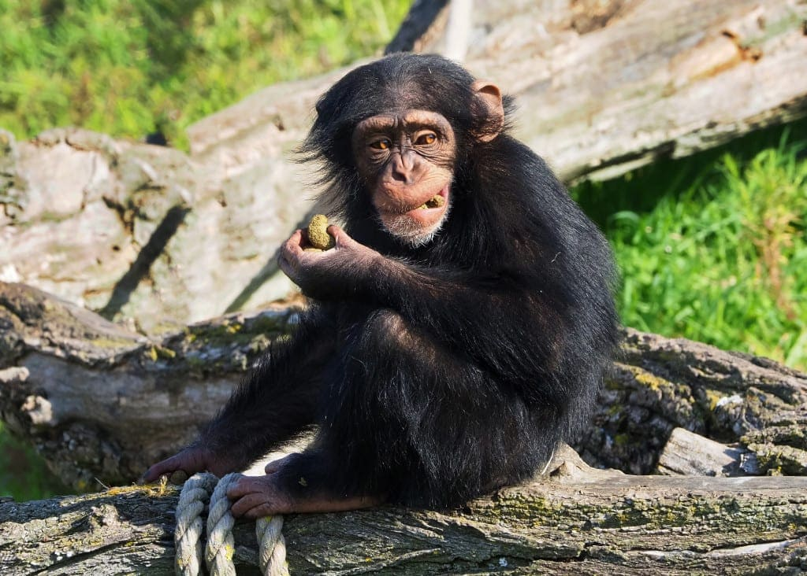
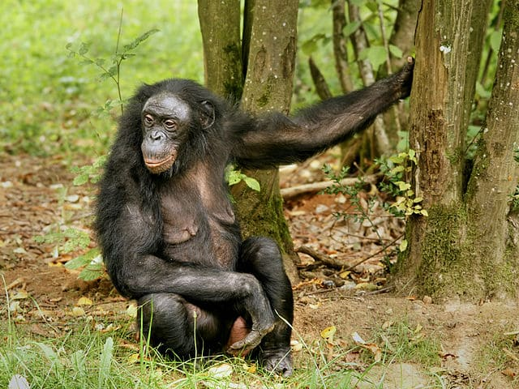
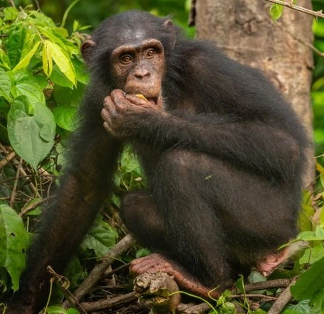
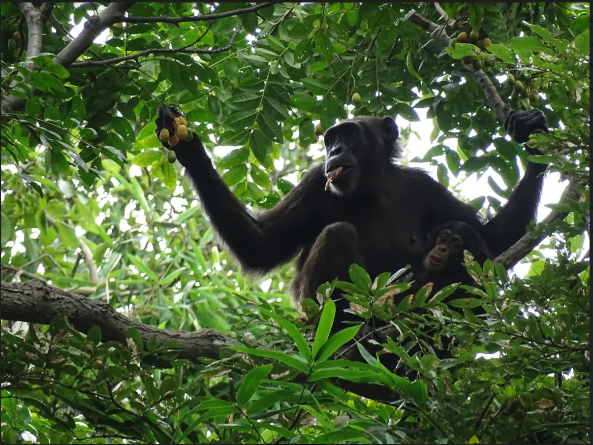
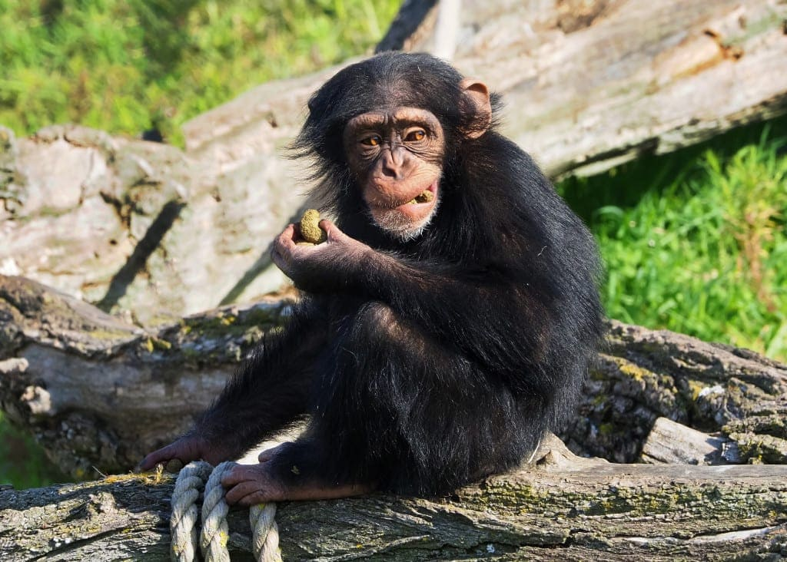
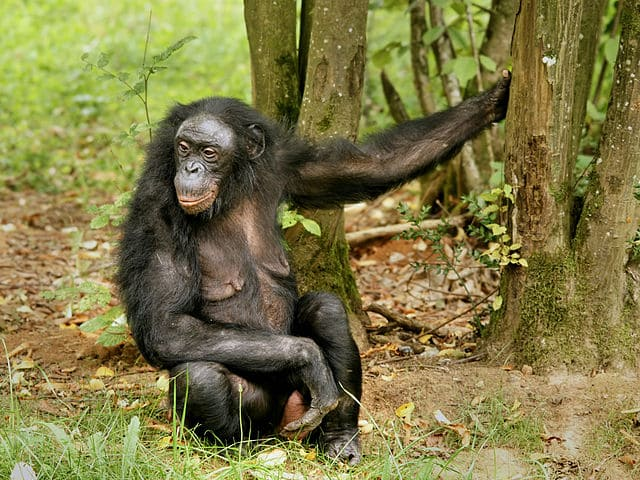
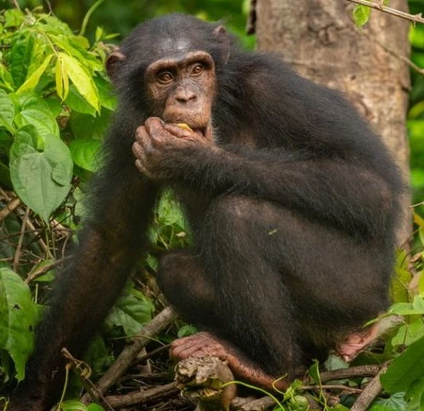
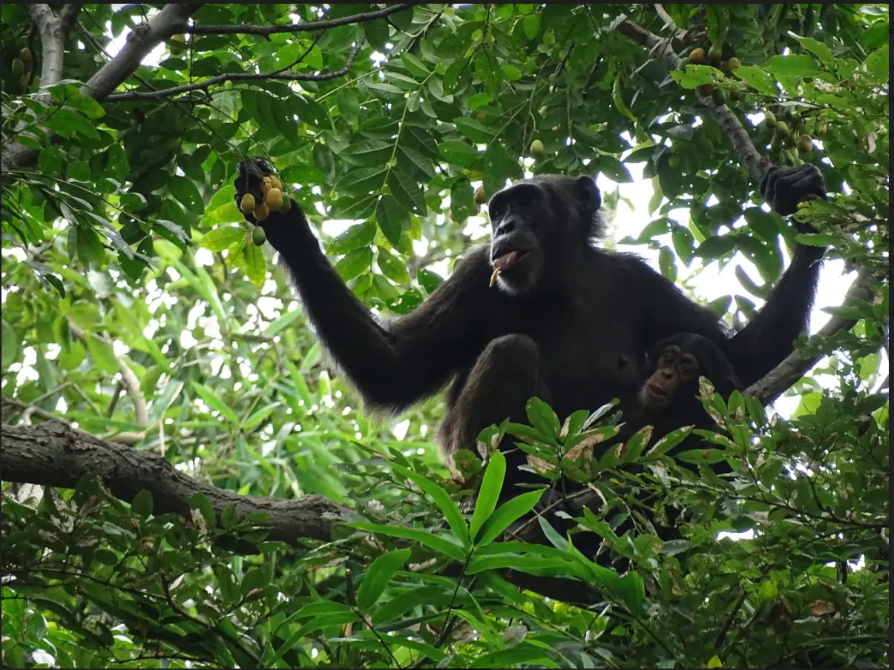

Welke soorten chimpansees bestaan er
Er zijn twee hoofdsoorten chimpansees: de gewone chimpansee (Pan troglodytes) en de bonobo (Pan paniscus). Deze twee soorten behoren tot het geslacht Pan en zijn de nauwste levende verwanten van mensen. Hier zijn wat meer details over elk van hen:
Gewone chimpansee (Pan troglodytes):
Er zijn vier ondersoorten van de gewone chimpansee:
- Pan troglodytes troglodytes (Centraal-Afrikaanse chimpansee)
- Pan troglodytes schweinfurthii (Oost-Afrikaanse chimpansee)
- Pan troglodytes verus (West-Afrikaanse chimpansee)
- Pan troglodytes ellioti (Nigeria-Cameroon chimpansee)
- Bonobo (Pan paniscus):
Bonobo's worden soms ook wel dwergchimpansees genoemd. Ze worden gevonden in de regenwouden van de Democratische Republiek Congo in Centraal-Afrika. Deze twee soorten delen ongeveer 98-99% van hun genetisch materiaal met mensen, wat hun nauwe evolutionaire verwantschap benadrukt. Elk van de ondersoorten van de gewone chimpansee heeft enkele variaties in hun kenmerken en verspreidingsgebieden. Chimpansees hebben complexe sociale structuren en vertonen gedragingen die vergelijkbaar zijn met die van mensen, waardoor ze fascinerende onderwerpen zijn voor onderzoek naar menselijke evolutie en gedrag.
 






